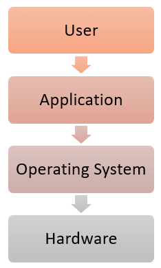

Features

- Protected and supervisor mode
- Allows disk access and file systems Device drivers Networking Security
- Program Execution
- Memory management Virtual Memory Multitasking
- Handling I/O operations
- Manipulation of the file system
- Error Detection and handling
- Resource allocation
- Information and Resource Protection